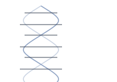
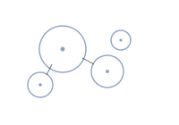
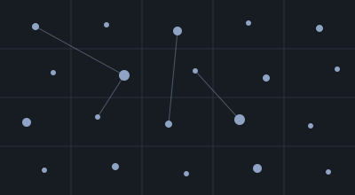
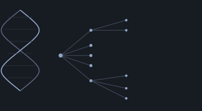
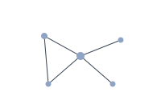

Nikitha Thoduguli

Email GitHub LinkedIn CV (PDF)
I'm a senior at MIT with hands-on experience in computational genomics, immunomics, and neurobiology. My work applies machine learning and statistical methods to biological data — from ancient genomes to immune receptor structure — to uncover mechanisms with real clinical relevance. I'm driven to bridge ML and biology to push the frontiers of translational research, turning fundamental discoveries into tools that meaningfully improve human health.
I'm currently in Manolis Kellis's lab at MIT CSAIL, building algorithms and cluster-scale pipelines in Python and C++ to model biological data that doesn't fit on one machine. Outside the lab, I lead MIT's Biotech Group and run projects for a global health nonprofit working to erase medical debt.

Featured Research

Summer Research Intern
Harvard Medical School, Dept. of Biomedical Informatics — Supervisor: Prof. Marinka Zitnik
- Designed a modality-sensitivity benchmark for single-cell multimodal LLMs, using a biologically inert baseline, gene order/identity scrambles, and graded marker-gene knockouts (k = 1–25) with expression-matched controls to isolate true biological signal from spurious noise.
- Scaled the benchmark to a 300k-cell, 35-cell-type atlas via a sharded SLURM pipeline benchmarking 5 model backends across 2 families (Cell2Sentence, CellWhisperer) using a two-tier, ontology-aware scoring scheme.
Manuscript for ICLR submission in progress · Code

Undergraduate Researcher
MIT CSAIL — Supervisor: Prof. Manolis Kellis
Evolutionary Comparative Genomics Merck Prize '25 · EECS Research Award '25
- Developed ANCoRA, a damage-aware empirical Bayes algorithm for reference-guided diploid genome assembly, and applied it to build personalized genomes for 34 haplotypes across 17 individuals (5 modern humans, 4 archaic hominins, 8 great apes).
- Applied transformer-based deep learning to predict chromatin accessibility across 100 epigenomic contexts, defining 11k+ lineage-specific cis-regulatory elements enriched in neurodevelopmental pathways and disease loci.
- Designed the variant-prioritization scheme that nominated a hominin-gained enhancer of GNB5, later validated by collaborators via luciferase reporter assays and reciprocal allele-swap experiments.
- Presented as an oral platform talk at the 2025 American Society of Human Genetics Annual Meeting (top 8% of submitted abstracts).
Manuscript submitted to Nature Genetics · Code
Single-Cell Transcriptomics
- Applied the lab's Cell-Projected Phenotypes (CPP) framework to compute cell-level Parkinson's disease pathology scores and identify donors whose transcriptional states concord with case/control labels, addressing disease heterogeneity for mechanistically grounded biomarker analysis.
Course Research Project
MIT — Deep Learning for Biology
- Independently designed and developed a multimodal model for generating cell-state-conditioned chromatin accessibility tracks in the context of Alzheimer's disease, using VAE embeddings for cell state and a discrete diffusion module.
Computational Immunomics Intern
Infinitopes — Supervisor: Dr. Georges Bedran
- Built an end-to-end computational pipeline for generating, co-folding, and analyzing TCR–pMHC complex structures using Boltz-2, a state-of-the-art deep learning sequence-to-structure model.
- Designed and executed five benchmarking studies assessing Boltz-2 performance in antigen recognition, structural accuracy, and immune specificity.
Leadership & Service
Oversee six initiatives and 100+ members; coordinate the annual MBG–Merck Biologics & Vaccines Symposium end-to-end, including speakers, poster presenters, logistics, and sponsorships.
Co-launched a $5K scholarship with Harvard Biotech Club, now in its third year; organized equity-focused fireside chats connecting MBG members with MIT faculty and industry leaders.
Led a team of 5 to raise funds that erased >$100K in medical debt at $1 per $100 forgiven; developed patient education video outlines on maternal and child health for Village Health Works in Burundi.
Fundraised >$500 annually to support two free weeks of sleepaway camp for 200+ Boston-area children affected by a parent's cancer diagnosis, through MIT's student-run chapter.
Supported a flipped-classroom introductory E&M course by attending lectures, fielding student questions, and leading weekly problem-solving sessions.
Improved the Biobots curriculum within MIT's freshman advising seminar, teaching biofabrication, 3D design, circuits, and neuronal cell and tissue culture.

Honors & Awards
Merck Prize
2025MIT Department of Biology — awarded for outstanding research and academic performance in biophysical or bioinformatics sciences.
Morais & Rosenblum UROP Award
2025MIT EECS — departmental recognition for undergraduate research excellence.
Platform Talk, ASHG Annual Meeting
2025Selected from top-scoring abstract submissions for a 10-minute oral presentation (<8% accepted).
HKN Member, IEEE Eta Kappa Nu
2025Invitation-only honor society for EECS students; juniors in the top 25% of their class are eligible.
Education
Massachusetts Institute of Technology
Expected June 2027Cambridge, MA · GPA 5.0/5.0
Major in Computer Science & Molecular Biology. Minors in Neuroscience and Political Science.
Skills
Languages & Systems
Machine Learning & Genomics
Experimental & Design